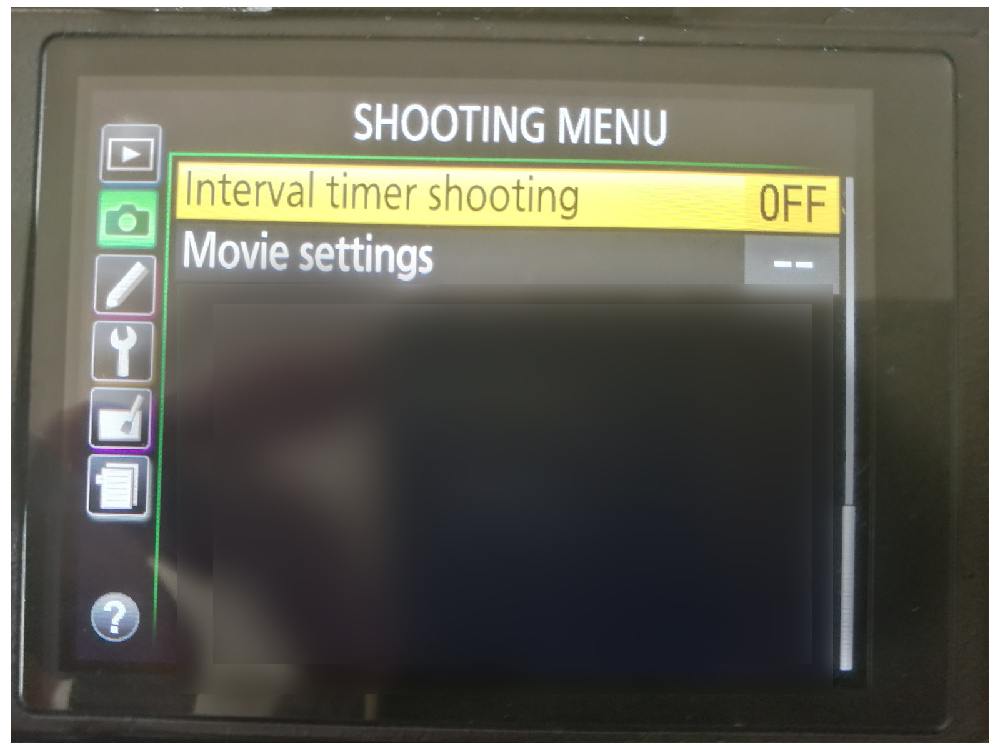
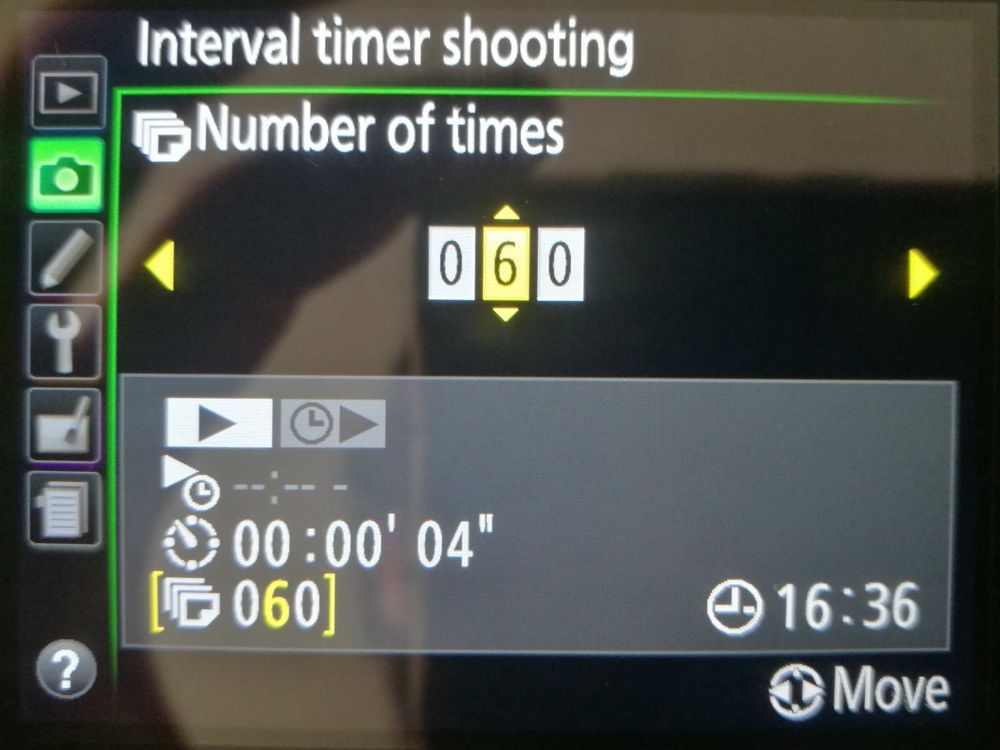
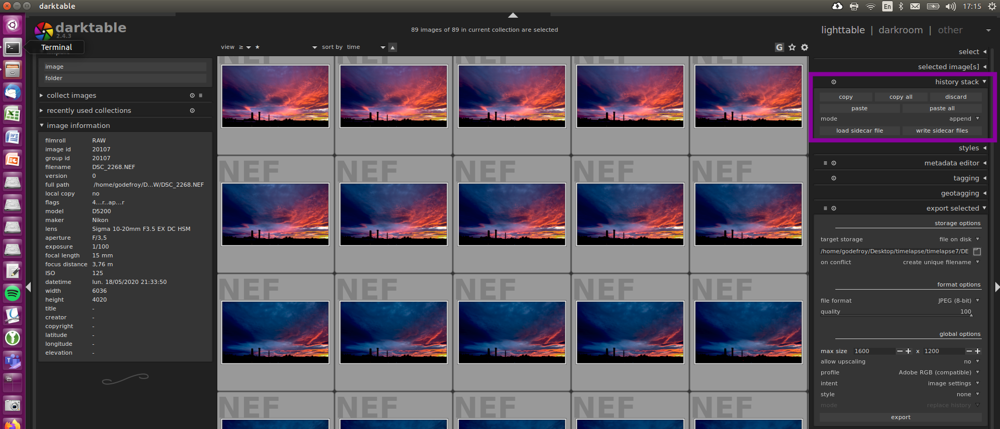
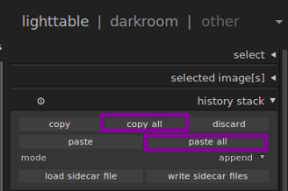
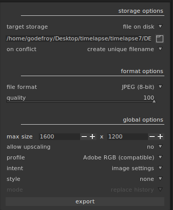

Confiné, le début de l'année 2020 à été l'occasion pour moi
de m'essayer à de techniques, dont la réalisation de timelapse.
Une timelapse consiste à filmer un sujet en mouvement en diminuant
la cadence de prise de vues pour que le mouvement du sujet semble accéléré
lors de la visualisation. Créer une timelapse prend du temps ; ça tombe bien,
le temps ce n'est pas ce qui manque dernièrement.
Dans ce tuto, je reviens sur la prise de vue, le post processing et les exports nécessaires pour obtenir
la vidéo ci-dessous :
C'est pas mal ton truc Gabriel, mais comment k'on fait ?
J'y arrive, petit impatient.
La prise de vue !
Pour commencer, et après avoir recharger ta batterie, il te faut sortir ton appareil
photo pour la prise de vue. Le ciel, une rivière, ou un bateau qui sort
d'un port peuvent faire de bons sujets. Une foule arrivant sur un lieu, ou un chantier également.
Une fois le sujet selectionné, fixe ton appareil photo. Un muret peut faire l'affaire,
mais un trépied et plus que recommandé ici. Pour éviter les tremblements désagréables,
choisis un trépied lourd, notamment s'il y a du vent.
Enfin, pense à bien composer ton image. Effectue tes réglages
en mode manuel, puis désactive l'autofocus.
Une fois installé, il faut calculer le nombre de photos à prendre.
Idéalement, 24 photos par secondes de vidéos sont nécessaires.
Pour une timelapse à partager avec la famille sur whatsapp,
je trouve qu'une vidéo de 5 à 15 secondes constitue un bon format.
Ici ma vidéo dure 5 secondes, il m'a donc fallu 5x24=120 images.
(Il est tout à fait possible de faire
des timelapses bien plus longues.
mais cela demande une certaine patience.)
Tu peux maintenant diviser la durée du phénomène que tu va prendre en photos
par ton nombre d'image. Pour 120 photos reparti sur 20 minutes de coucher de soleil,
je réalise une prise de vue toutes les 10 secondes.
Si les mathématiques ne sont pas ton truc, utilise le petit calculateur ci-dessous:
Enfin, j'espère que tu as des vêtements adaptés, à boire et à manger, parce qu'il
te faut maintenant appuyer sur ton déclencheur toutes les 30 secondes...
Je plaisante, ne fais pas ça ! Cela introduirait du mouvement dans ta caméra.
C'est donc le moment d'utiliser le mode interval time shooting .
Sur mon Nikon D5200, je peux y sélectionner l'heure de début des prises de vue,
le nombre de prises de vue et l'interval en minutes et secondes :


Le post-processing (darktable)
Si tu shoot en RAW , il te faut convertir tes images en JPG (et sinon, tu peux passer directement à la section suivante).
Sur darktable , je process l'une des images puis j'utilise la fonctionnalités
permettant de copier / coller la pile de modification pour l'appliquer à l'ensemble des photos.
Enfin, j'exporte l'ensemble au format jpeg.



La conversion (ffmpeg)
Finalement, il est temps de convertir ces images en un petit filme. J'utilise ffmpeg
de la manière suivante. Dans un premier temps, je crée un fichier contenant le nom de chaque image,
via la commands ls . Ici, je la couple avec sort -r pour faire passer
la vidéo dans un sens puis l'autre.
echo > listpng.txt; # Creation d'un fichier vide
for img in `ls *.jpg ; ls *.jpg | sort -r ` ; # Pour chaque image...
do
echo file \'$img\' >> listpng.txt ; # ajout d'une ligne
done ;